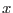

This task takes an OM OSW source list, with source positions in pixels, and converts to sky coordinates. The task also produces a sky-rotated image and tries to perform sky aspect-correction of both the image and the source list..
The task requires the user to enter the name of an OSW source list and its corresponding OSW image. The name of the output sky coordinate image must also be passed to the task, along with a tolerance parameter (see below).
The task first reads the binning factors (BINAX1 and BINAX2) from the
FITS header, along with the BPE binning flag (TWIXEL) and the  and
 size of the OSW window (in centrioded pixels) along with the
and
size of the OSW window (in centrioded pixels) along with the
and  offsets of the window. The pixel coordinates of the OSW source
list are then converted to the PIXCOORD reference frame (2048 by 2048
centroided pixels).
offsets of the window. The pixel coordinates of the OSW source
list are then converted to the PIXCOORD reference frame (2048 by 2048
centroided pixels).
The OM optics have a small amount of distortion, and the CAL call omDistortion is used to get the offsets of the pixel position from a linear scale. These offsets are then applied to the pixel positions. A CAL to GetPlateScale is subsequently used to convert from pixels to radians. (The center of the detector, i.e. the position of the OM boresight is pixel 1024.5, 1024.5).
The shift and add process is all performed relative to a reference frame (used to find the tracking stars), so a call to OAL_getAttitude is used, with the time of the reference exposure, to get the spacecraft attitude. The CAL Boresight routine is used to obtain the boresight offset matrix, which is applied to the s/c attitude to get the OM boresight direction, which is then rotated by the roll angle about the s/c boresight direction, as are the tangent plane coordinates. The tangent plane coordinates are then converted to sky coordinates.
The source positions, in RA and DEC, are then written to the source list, along with the positional error (the initial pixel coordinates are retained in the source list).
The second (optional) part of the task employs the USNO catalogue (if available) to correct the RAs and DECs of the sources for any difference between the nominal pointing direction of the satelliet and the true one. The OM pointing vector and field of view are used as parameters to a search of the USNO, which lists all catalog stars in the field of view. The algorithm sets up a grid of offsets in the x and y directions to be used to match up stars in the source list to those in the catalogue. For each set of offsets a maximum likelihood parameter is computed, and the offsets with the maximum parameter value are taken to be the best offsets. If sufficient stars are matched then a least-squares fit is performed, to yield more accurate astrometry. The fit yields more accurate values for the offsets, and also any small rotation bewteen the two coordinate systems. Error for the parameters are computed by Monte Carlo simulations, in which new data sets are generated and the parameters computed. The mean and standard deviations of all the fitted parameters from the simulations are computed, and the standard deviations are used as the errors. Corrected RA and DEC columns are added to the source-list file.
The final section of the code takes the OM OSW image and rotates and rebins it into sky coordinates. From SAS 9.0 onwards, the 16-bit QUALITY image is also rotated and added to the output sky-image file. For this image, instead of using an interpolation scheme to set each of its pixels, each pixel is set by checking bits 0 to 10 of the nine pixels of the unrotated-image centred at the interpolation point and setting the corresponding bit if any of those is set.